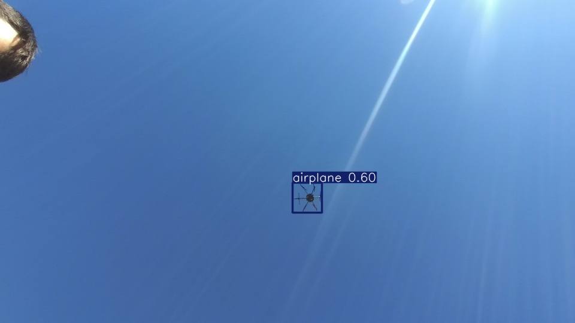
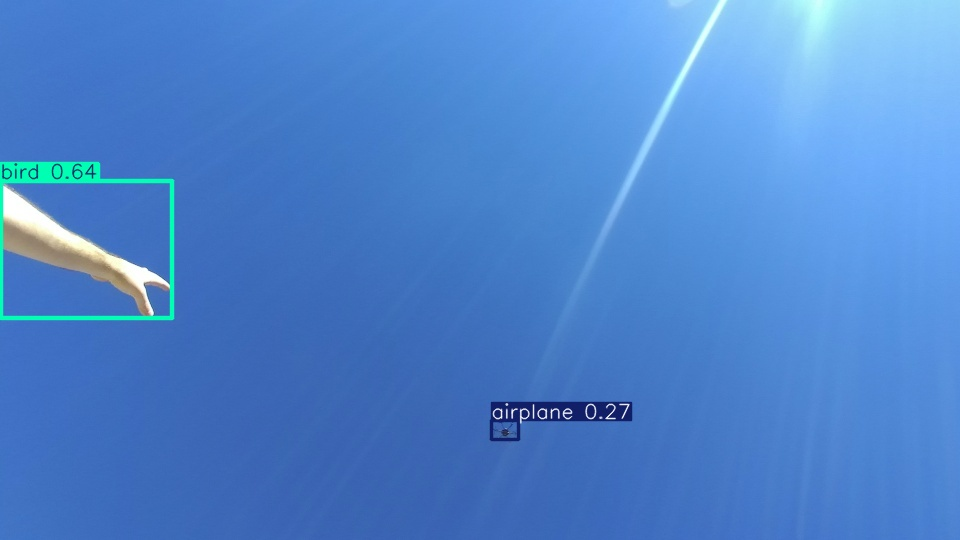
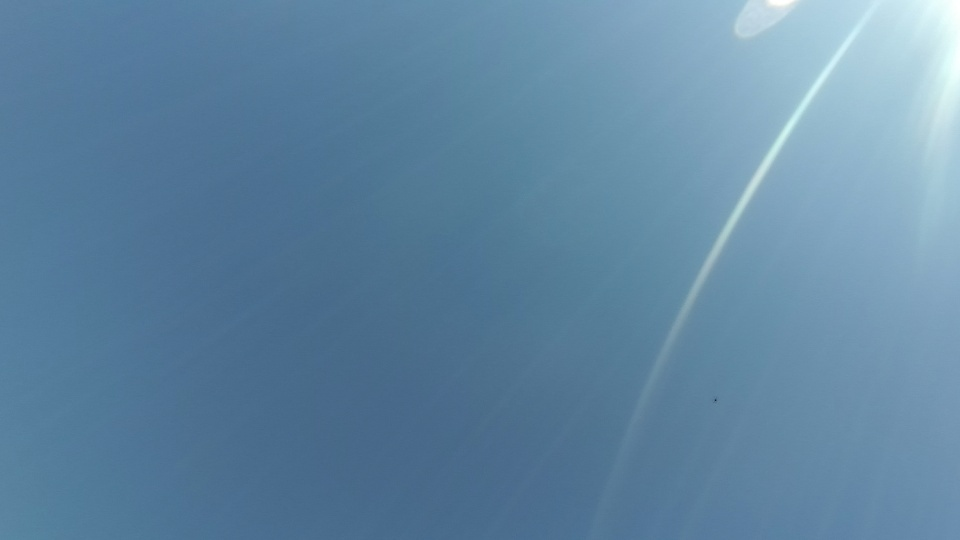

class: center, middle # BeamFinder ### Drone Detection for Line of Sight Communication Krish Mathur - 2023A8PS1223G Sahid Alam - 2023A1PS1164G --- # Project Recap We're working on a **THz (terahertz) communication system** where a ground station needs to maintain a wireless link with a drone in the air. - The ground station has ~50 narrow beams — only one can be active at a time - A camera points up at the sky and captures the drone - We need to **detect the drone's position** in the frame so the system knows which beam to activate - Our model outputs **(x, y, width, height)** — that bounding box tells us where the drone is - If the detection is wrong or inaccurate → wrong beam gets selected → link drops We chose **YOLO26n** (the nano variant, released Jan 2026) because it's lightweight enough for real-time use, and it has built-in improvements for small-object detection which is exactly our problem — drones look tiny from the ground. --- # What We Did — Pipeline Built two scripts: - **`detect.py`** — runs YOLO26n on images, outputs bboxes to CSV - **`train.py`** — fine-tunes model on our drone data - **`data.yaml`** — dataset config (1 class: drone) Output format: ``` image_name, x, y, width, height, confidence, class ``` --- # Dataset - **7,970** training images, **3,416** validation images - Resolution: 960 × 540, RGB JPEG - Used dataset/train_stable and dataset/validation_stable - 51 numbered subfolders (0–50) <table class="img-table"> <tr> <td><img src="sample_clean.jpg" /><div class="caption">Typical image — small drone, sun glare</div></td> <td><img src="sample_head.jpg" /><div class="caption">Person's head visible at edge</div></td> </tr> </table> --- # What We Did — Detection Ran **YOLO26n pretrained on COCO** (no fine-tuning yet) on sample images. | Setting | Value | Why | |---------|-------|-----| | `model` | yolo26n.pt | pretrained COCO weights | | `conf` | 0.25 | minimum confidence threshold | | `imgsz` | 640 | input size (images get resized) | **What happened:** - Drone detected as "airplane" (conf 0.27–0.60) — **no "drone" class in COCO** - Person's hand detected as "bird" (conf 0.64) — **false positive** - Very distant drones → **0 detections** (too small) - Output: CSV with bounding boxes + annotated images --- # Detection Output - Misclassification <table class="img-table"> <tr> <td><div class="caption">Drone → "airplane" (0.60)</div></td> <td><div class="caption">Hand → "bird" (0.64)</div></td> </tr> </table> --- # Detection Output — Missed  <div style="text-align:center;font-size:14px;color:#888;margin-top:6px">Drone too far away → 0 detections</div> Model completely missed the drone — it's just a few pixels. --- # Results So Far Using pretrained COCO model (not fine-tuned yet). **What works:** - Pipeline runs end-to-end, no crashes - Bounding boxes in correct (x, y, w, h) format - Annotated images saved for inspection **The issue:** COCO has no "drone" class. Drones get labeled as "bird" — similar shape at distance. --- # Problems — Annotations .red[blocking] Dataset has images but **no label files**. YOLO training needs a `.txt` per image: ``` 0 0.45 0.32 0.12 0.08 ``` Without labels → can't fine-tune for drones. **This is the main blocker right now.** --- # Problems — Dataset Quality **Sun glare / lens flare** - Present in almost every image — bright diagonal streak across frame - Model might learn to associate glare with "drone" **Drone is very small** - Only ~20–40 pixels across in a 960×540 frame - Some images the drone is nearly invisible (just a dot) **People appearing in frame** - Some images show a person's head or hand at the edge - Could cause false positive detections --- # Problems — Other Issues **Uneven image distribution** - Subfolders range from 1 to 1,126 images **Aspect ratio** - 16:9 images get letterboxed to 640×640 square **Low contrast** - Dark drone against bright overexposed sky - Hard to distinguish from noise or dust on lens --- # Analysis **Annotation is the bottleneck.** Everything else is ready. **YOLO26n fits well:** - Single-class detection is simplest task type - ProgLoss + STAL helps with small objects - Nano size works for edge deployment **Open questions:** - Is (x, y, w, h) enough? - How precise must the bbox be for beam selection? --- # Questions for You 1. **Annotations** — best way to label 11K images? - Label Studio is a good option can use community edition (https://labelstud.io/) - https://labelstud.io/blog/use-yolo26-with-label-studio-for-fast-bounding-box-pre-annotations/ 2. **Use better dataset?** - since sun glare, lens flare, low contrast, small object size issues - Can use CVPR 2025 Anti-UAV Workshop & Challenge dataset - called Anti-UAV Challenge dataset (https://github.com/ZhaoJ9014/Anti-UAV) 3. **Model size** — should we try yolo26s instead of yolo26n? - yolo26s has 2x more parameters → better feature extraction - our drone is ~20-40px across — nano might not have enough capacity to learn such small features - tradeoff: slower inference but potentially much better accuracy on small objects --- # Next Steps - Get guidance on annotation approach - Annotate ~500–1000 images - Run first training, report metrics --- class: center, middle # Thank You Happy to go deeper into any slide. .footnote[Made with [remark.js](https://github.com/gnab/remark)]